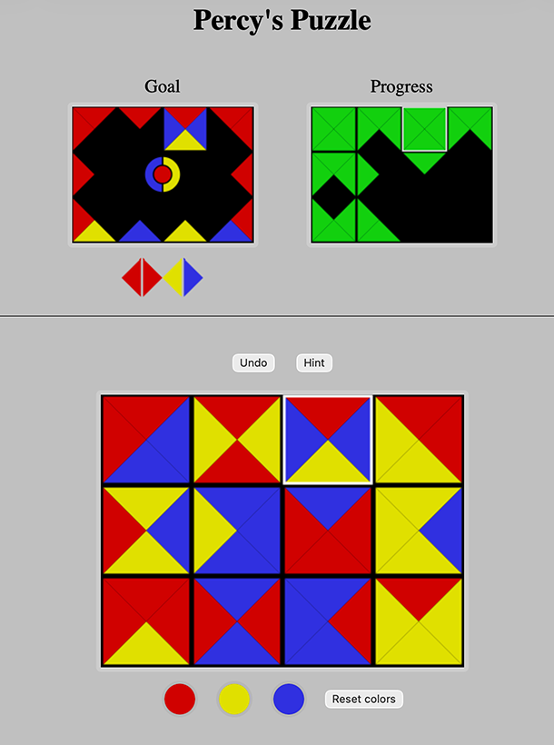
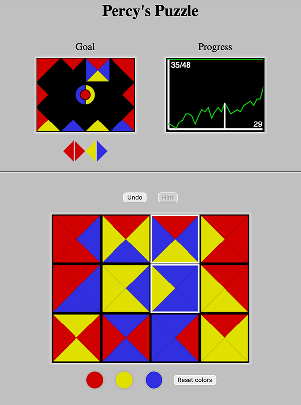

In his book New Mathemartical Pastimes, Percy MacMahon described a puzzle that is comprised of 24 square tiles, each tile subdivided by its two diagonals into four isosceles right triangles called compartments. Each compartment is colored in one of three colors. Assuming that tiles with the same color pattern when rotated are considred the same, there are 24 distinct tiles as pictured below. (In actuality MacMahon labeled the compartments with integers 1 to 3; his book was published at a time when color printing was much less common than it is today.)
A set of MacMahon tiles using the colors red, yellow, and blue is shown below. The tiles are arranged to form a 4x6 rectangle.
A tile has one of four types based on its color pattern:
| square | pentagon | triangle | hourglass |
In a rectangular arrangement of the tiles, the contact type of a pair of tiles that share an edge is the pair of colors (mates) in the compartment on that shared edge. A contact system is a set of contact types that uniquely defines each color's mate. With three colors there are a contact system is one of two possible sets of contact types (1) each color is its own mate, or (2) one color is its own mate and the other two colors are mates. A tiling with a given contact system is a rectangular arrangement of tiles all of whose contact types belong to the contact system. A contact system is represented graphically using pairs of isosceles right triangles each pair colored using color mates.
The boundary variety of a tiling is the pattern of colors of the compartments on the border of the rectangle.
The examples below show two tilings. Each tiling is followed by the graphical representations of its boundary variety and contact system.
The classic puzzle, that was posed without solution in MacMahon's book, is to tile a 4x6 rectangle with the 24 tiles such that (1) the compartments on the border of the rectangle are all the same color, and (2) if two tiles share an edge, the compartments on each side of the edge are the same color. In our terminology, condition (1) is eqiuvalent to stating that the boundary variety consists of only one color. (2) is equivalent to stating that in the contact system, every color is its own mate.
The total number of solutions to this puzzle is 106624. If rotations and reflections count as the same, the number of distinct solutions is 106624/4=26656. Finally, if we count solutions where blue and yellow are interchanged as the same, the number of distinct tilings is 26656 / 2 = 13328. It is interesting to note that an early computer search for solutions in 1964 found just 12261 solutions, which many print and online sources incorrectly give as the number of solutions.
Despite the large number of solutions this puzzle can be quite challenging without some careful thought and an organized approach to attacking the problem. Click on the puzzle below to try it for yourself.
One can imagine endless variations of the classic puzzle where the puzzle asks for a tiling of a rectangle a given boundary variety and contact system. Of course some will have no solution. For example, it is not possible to complete the tilings in the the three puzzle below. Can you prove each of the three puzzles below is not possible to tile?
The puzzles below are possible; click on the diagram to try solving the puzzle.
MacMahon also suggested puzzles whose tile set is a subsets of the 24 tiles. The specific subsets he suggested are shown below.
| 20 tiles (remove the red square, the pure blue/yellow triangle and hourglass tiles and the mixed red hourglass tile) | 16 tiles (from the 20 tile set, remove the hourglass tiles) | |||
| 15 tiles (from 16 tile set, remove the blue square, yellow square, and add the pure blue/yellow triangle tiles) | 9 tiles: the pentagon and the pure triangle tiles | |||
No tiling of a rectangle other than 1x1 has a 180° rotational symmetry (any tile except the center one would have to occur twice). Some tilings, however, have a horizontal or a vertical mirror symmetry. For example, the tiling below has a horizontal symmetry. In general, a tiled rectangle with mirror symmetry will consist of (1) square, pentagon or pure hourclass tiles, i.e. tiles having a mirror symmetry, the tilings's line of symmetry and (2) mixed triangle tiles, i.e. tiles whose mirror image is a different MacMahon tile, off the line of symmetry. An example is shown below.
To allow for a wider variety of tilings with a "symmetry", we will say a tiling has bicolor symmetry if the tiling is antisymmetric in two colors, i.e. if every pair of symmetric compartments is either one each of the two colors or both the third color. With this definition there are rotational and mirror bicolor symmetric tilings with many subsets of the MacMahon tiles.
The examples below show one tiling with a rotational bicolor symmetry and one with a mirror bicolor symmetry. The graphical symbol for these bicolor symmetry types is at the center of the boundary variety rectangle diagram.
In honor of Percy MacMahon, Percy's Puzzle is a rectangle tiling problem that uses a given subset of tiles and specifies a goal, namely the boundary variety, contact system, and bicolor symmetry to be satisfied by the tiling. In addition, the goal may include the specific placement of frozen tiles. Frozen tiles are marked by a white border and may not be moved. The solution to the puzzle is unique given the goal.
While solving the puzzle, the player may opt to receive a hint. Only one hint per puzzle is offered. The hint marks correctly placed tiles with a white border. It may also reveal additional tile locations depending on how much progress the player has made tworads the goal. The hint is not immediately available, but will become available after the player has made some progress towards the goal. The hint remains available until the puzzle is solved.
Tne player receives a score that has two numbers: (1) the number of moves and (2) a numeric point score based on how close the finial tiling is to the goal. The score is computed by adding one point for each contact made correctly, two points for each correct boundary color, and three points for attaining the goal's symmetry.
On the online Percy's Puzzle page, a player moves tiles by either (1) clicking or tapping on a tile to rotate it, or (2) dragging a tile to a new position in the rectangle. When dragging, the tile that was in the new position is moved to where the dragged tile was. When cliking to rotate, if the shift key is held down, the roation is clockwise, and otherwise, counterclockwise.
The puzzle page displays progress towards the goal in two ways: (1) a map that shows which compartments satisfy the contact system and boundary variety, and (2) a graph that shows the history of the player's score, number of moves made, and the move when the hint was used (if it was). Clicking on the map or the graph toggles between the two progress displays.
Below the tiling are three color buttons that allow the user to change the colors, and a button to reset to the default red, yellow, and blue colors.
On the Percy's Puzzle page, below the puzzle are buttons that allow you to change the color sceme to your liking, or to reset back to the default colors.
| A Percy's Puzzle page with the progress map (click on it to try a puzzle!). | The page display including the progress graph after the hint was used. | |
|
 |
 |
The MacMahon squares laboratory lets the user construct tilings with different sets of tiles. At the top of the page, the user can choose the set of tiles and the dimensions of the rectangle to be tiled. Next the user can choose the boundary variety of the goal tiling. Initially, the boundary variety cmpartments (triangles) are all don't care compartments. . A don't care compartment is colored gray and may be any color in the tiling. Clicking on a triangle in the goal variety will cycle through the possible colors including gray for the don't care case. Below the goal boundary variety is the goal contact system. Clicking on the contact system cycles through the possible systems.
Once the tiles, dimensions, and the goal have been set, the user can search for a tiling matching the goal. To freeze a tile in its current position, click on the "Freeze/unfreeze a tile" button and then click on the tile. Doing this again will unfreeze the tile. When a tile on the border of the tiling is frozen, the colors in the goal boundary variety in that tile are also frozen. As a result, if the user freezes a tile with a nonmatching boundary variety triangle, it will not be possible to complete the tiling successfully. (To correct this, unfreeze the tile and either change the boundary variety triangle color or change the tile in that position.)
If a tiling is successfully completed, then below the tiling a puzzle code will be displayed. A puzzle code is a string of characters that encodes the goal and tiling. If there are don't care triangles in boundary variety goal, they will be replaced in the encoded puzzle goal by the actual color in the tiling. Any symmetry that the tiling has will be added to the goal in the encoded puzzle.
The puzzle code may be passed as an argument to javascript code used in these pages or in a query string to with key "puzzle" to the webpage "percy.html" to create a Percy's Puzzle web page. If being used in a query string, set the check on the "URI safe" button. The "Copy to clipboard" button makes it easy to paste the puzzle code into the browser web page address or anywhere you wish to indert it.
Displaying the puzzle using the percy.html web page with a query string may use different colors than the ones in the tiling created in the laboratory (they will be a permutation of the colors). Also, there will be "Solve" button present which allows the user to have the solution in the puzzle code to be displayed. It is also important to note that there may be more than one solution and the application recognizes any tiling satisfying the goal as a solution.
Try this link created using a puzzle code generated in the lab: percy.html?puzzle=c%5E%5B%5DbSRQ86. This puzzle has 320 solutions!
If you want to go directly to the laboratory, click here.